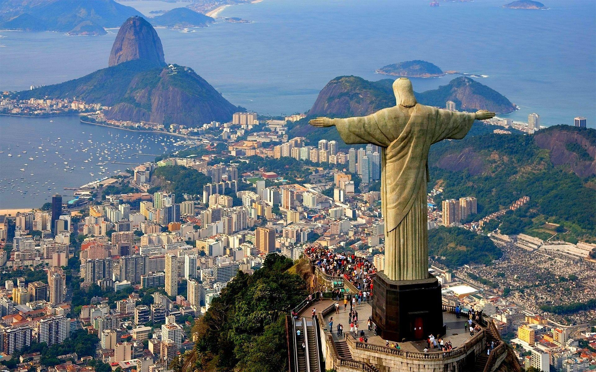

Christ the Redeemer

Christ the Redeemer is an Art Deco statue of Jesus Christ in Rio de Janeiro, Brazil, created by French sculptor Paul Landowski and built by Brazilian engineer Heitor da Silva Costa
in collaboration with French engineer Albert Caquot. Romanian sculptor Gheorghe Leonida fashioned the face. Constructed between 1922 and 1931, the statue is 30 metres (98 ft) high
excluding its 8-metre (26 ft) pedestal. The arms stretch 28 metres (92 ft) wide.
The statue weighs 635 metric tons (625 long, 700 short tons), and is located at the peak of the 700-metre (2,300 ft) Corcovado mountain in the Tijuca Forest National Park overlooking
the city of Rio de Janeiro. A symbol of Christianity across the world, the statue has also become a cultural icon of both Rio de Janeiro and Brazil, and is listed as one of the
New7Wonders of the World. It is made of reinforced concrete and soapstone
History
Vincentian priest Pedro Maria Boss first suggested placing a Christian monument on Mount Corcovado in the mid 1850s to honor Princess Isabel, regent of Brazil and the daughter of
Emperor Pedro II, but the project was not approved.[1] In 1889, the country became a republic, and due to the separation of church and state, the proposed statue was dismissed.[7]
The Catholic Circle[clarification needed] of Rio made a second proposal for a landmark statue on the mountain in 1920.[8] The group organized an event called Semana do
Monumento ("Monument Week") to attract donations and collect signatures to support the building of the statue. The organization was motivated by what they perceived as 'Godlessness'
in the society. The donations came mostly from Brazilian Catholics. The designs considered for the "Statue of the Christ" included a representation of the Christian cross, a statue of
Jesus with a globe in his hands, and a pedestal symbolizing the world. The statue of Christ the Redeemer with open arms, a symbol of peace, was chosen.
Local engineer Heitor da Silva Costa designed the statue. French sculptor Paul Landowski created the work.
In 1922, Landowski commissioned fellow Parisian Romanian sculptor Gheorghe Leonida, who studied sculpture at the Fine Arts Conservatory in Bucharest and in Italy.
A group of engineers and technicians studied Landowski's submissions and felt building the structure of reinforced concrete (designed by Albert Caquot) instead of steel was more suitable
for the cross-shaped statue. The concrete making up the base was supplied from Limhamn, Sweden. The outer layers are soapstone, chosen for its enduring qualities and ease of use.
Construction took nine years, from 1922 to 1931 and cost the equivalent of US$250,000 (equivalent to $3,600,000 in 2019) and the monument opened on October 12, 1931. During the opening
ceremony, the statue was to be lit by a battery of floodlights turned on remotely by Italian shortwave radio inventor Guglielmo Marconi, stationed 9,200 kilometres (5,700 mi) away in
Rome but because of bad weather, the lights were activated on-site.
Restoration
In 1990, several organizations, including the Archdiocese of Rio de Janeiro, media company Grupo Globo, oil company Shell do Brasil, environmental regulator IBAMA, National
Institute of Historic and Artistic Heritage, and the city government of Rio de Janeiro entered an agreement to conduct restoration work.
More work on the statue and its environs was conducted in 2003 and early 2010. In 2003, a set of escalators, walkways, and elevators were installed to facilitate
access to the platform surrounding the statue. The four-month restoration in 2010 focused on the statue itself. The statue's internal structure was renovated and its
soapstone mosaic covering was restored by removing a crust of fungi and other microorganisms and repairing small cracks. The lightning rods located in the statue's
head and arms were also repaired, and new lighting fixtures were installed at the foot of the statue.
The restoration involved one hundred people and used more than 60,000 pieces of stone taken from the same quarry as the original statue. During the unveiling
of the restored statue, it was illuminated with green-and-yellow lighting in support of the Brazil national football team playing in the 2010 FIFA World Cup.
Maintenance work needs to be conducted periodically due to the strong winds and erosion to which the statue is exposed, as well as lightning strikes.
The original pale stone is no longer available in sufficient quantity, and replacement stones are increasingly darker in hue.